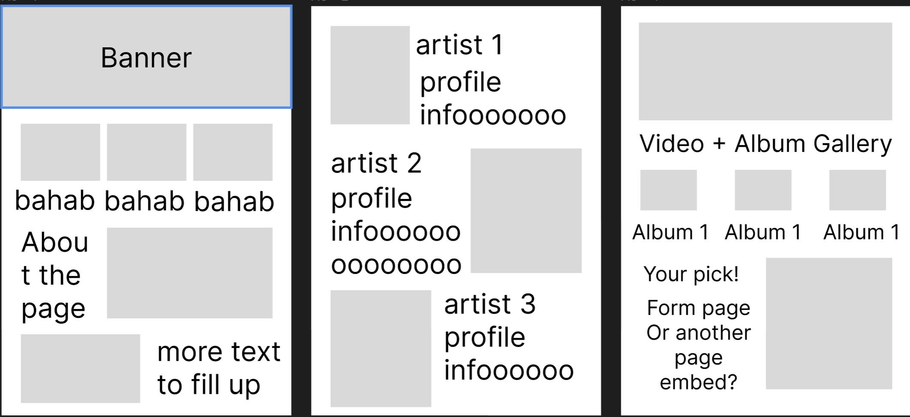

About
A music showcase platform that values quality over quantity. We categorize our selections by genre, recency, type, and popularity. Both old and new artists alike can be featured!
Audience
The intended audience are Gen Z college students/modern demographics new to the music scene, but this can also be inclusive of a general audience that is older and has a larger variety of music tastes.
Design and Style
I'm thinking of using monochromatic hues that vary from a rich-violet to a spearminty green. Moreover, the idea is to use earthy-colors that are welcoming, or even calming to the user.
Tentatively, the colour scheme will look like this...
Headers will be purple (Primary).
Main text will be turqoise blue (Secondary).
Details and other things of the like will vary between green and blue tints (Tertiary). Additionally, five total variations of the main colors will be implemented where appropriate.
3 websites that inspire my style and idea for this page:
Project Scope
- 1x About/Home Page
- 1x Artist Spotlight Page (Pic with artist bio)
- 1x Albums of the Month Page (Columns are Genres)
- Navbar with sub and sub-sub menus
- iFrames, Media tags, or Responsive Web Design
- Footer
Wireframe
